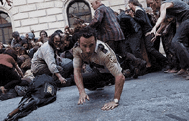

Where Did It All Start?
Zombies are fictional undead creatures, typically depicted as mindless, reanimated corpses with a hunger for human flesh and/or brains. They are most commonly found in horror works and the term comes from Haitian folklore where a zombie is a dead body reanimated by voodoo magic. Most modern depictions of zombies do not usually involve magic to conjure the creatures, but instead use methods akin to a virus outbreak.
The modern concept of the zombies we know today can be attributed directly to George Romero's 1968 class, Night of the Living Dead. Using the zombie vehicle, Romero used his films to criticize real-world issues, such as government ineptitude, bioengineering, slavery, greed, and exploitation.

Why the Fascination?
The fascination with zombies stems from a need to understand (or give a face to) the growing concerns around us. We use zombies in a way that allows us to emotionally cope with the devastation we see on a daily basis. Starting with the World Wars and coming to present day, we are becoming more acutely aware of our mortality and the role outside forces play on us. Humanity is no longer hopeful as they were during the Enlightenment or the Industrial Revolution. As Angela Becarra Viergara states in her doctoral dissertation, Fictions of Destruction:Post-1945 Narrative and Disaster in the Collective Imaginary,events in the 20th century, along with movements to increase environmental awareness have left us with doubts about the consequences of our development as a modernized society and "instead we are left with this cultural fixation on fictionalizing our own death, very specifically mass-scale destruction."